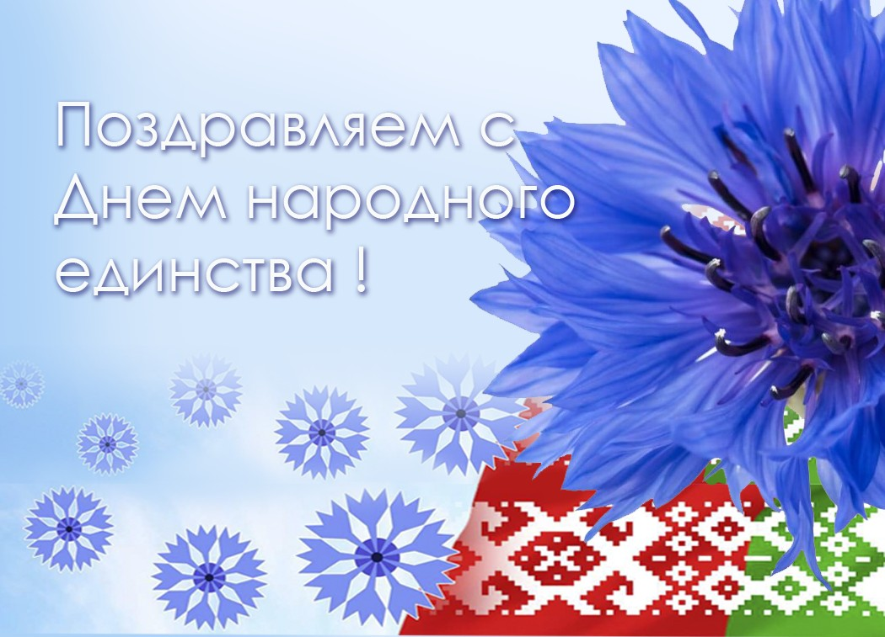

С ДНЁМ НАРОДНОГО ЕДИНСТВА!

История праздника День народного единства Беларуси
Праздник приурочен к годовщине польского похода Красной армии (17 сентября 1939 года) в результате которого осуществилось Воссоединение западных и восточных земель Беларуси (тогда БССР). 17 сентября 1939 года, Красная армия совершила акт исторической справедливости, вернув существенную часть белорусских земель с исконно белорусским народом, разделенным против его воли по условиям Рижского мирного договора в лоно родной страны.
До освободительно похода Красной армии на протяжении 18 лет половина территории современной Беларуси стала «Крэсами всходними» (восточными окраинами,) колониями Польши. И польские власти во главе с националистическим правительством Пилсудского проводило в отношении белорусского народа свою колониальную политику, с насильственным ополячиванием белорусов, т.н «полонизацию».
Советское правительство хотело добиться исторической справедливости, и воссоединить разделенный белорусский народ. И поводом для этого послужило начало Второй мировой войны. Тогда 1 сентября немецкая армия напала на Польшу и быстрыми темпами продвигалась по ее территории. Для того, чтобы не допустить захват исконно белорусских земель с белорусским населением, СССР пошел в наступление с другой стороны, и практически беспрепятственно, смог отвоевать своё. Белорусы были очень рады тому факту, что вновь начнут жить вместе, в одной стране.
В результате, после воссоединения Западной Беларуси с БССР, территория республики составила 225,7 тыс. км2, а население выросло до 10 млн. человек. В результате освободительного похода Красной армии население и площадь Беларуси выросли в два раза!
Кто придумал праздник День народного единства 17 сентября
Улицы с названием 17 сентября есть во многих городах Беларуси. Так советские власти увековечили в истории День народного единства Беларуси. Однако праздник, несмотря на большой общественный запрос, никогда широко не отмечался.
Общественный запрос сделать этот день праздничным был уже в истории современной Республики Беларусь. Так еще с 1990-х годов граждане Беларуси писали официальные письма, с предложением к властям страны увековечить факт Воссоединение белорусского народа в государственном календаре. Однако на протяжении многих лет государство отвечало отписками о понимании важности этого дня в истории Беларуси, но не желанием ссорится с Польшей, для которой эта дата является днем «памяти и скорби».
Однако белорусское общество не сдавалось. И продолжало настаивать на том, чтобы сделать 17 сентября днем народного единства белорусов. В результате последние годы на том, чтобы сделать 17 сентября праздничной настаивала Гражданская инициатива «Союз». Данное объединение, в которое входит множество историков, продолжало писать официальные запросы к властям, а также рассказывать о важности этого дня в СМИ, и даже выпустило на эту тему целый исторический журнал «Скидель».